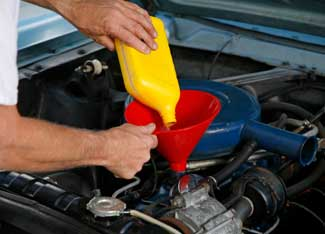

Changing your own oil can be easy to do, and it’s not expensive. Regular oil changes will prolong the useful life of an engine.
But if you just want to do your own oil changes to save money, consider that express oil change outlets change the oil for little more than it costs to do it yourself, usually anywhere from $25 to $40. Further, you’ll have to dispose of your old oil, something the oil-change folks do for you. It might not be worth the time or hassle to change the oil yourself. But for many people, especially those outside metro areas, the options narrow to the local garage, which will often charge $30 or more for a change. At that price, doing it yourself (typically about $20) becomes a better proposition. Plus, you'll have the satisfaction of maintaining your vehicles - and you'll know it's been done right.
If you decide to change your car or truck oil yourself, you’ll need a few basic tools. First, you’ll need a set of ramps or a pair of jack stands and a jack. Many people find working with ramps easier, for the simple reason they require only a steady eye and a light foot on the gas to get your vehicle at working height.
Second, you’ll need an oil filter wrench. In older vehicles with lots of clearance, a strap-type wrench (basically a strap of steel that tightens around the filter when it’s pulled tight by its handle) works well. But many newer cars with tightly packaged engine and transmission assemblies require an oil filter socket wrench - basically a large, pressed-steel can that fits around the outside of the filter, turned with a 3/8-drive socket wrench and extension. The length of the extension will vary depending upon oil filter location.
Third, you’ll need the correct-sized tool to remove the oil drain plug, either a box-end combination wrench or a socket wrench. Again, ease of access will determine the correct type. I prefer a box-end wrench for the simple reason it’s easier to get good leverage for pulling a stubborn drain plug loose.
Fourth, you’ll need a good drain pan. I strongly recommend a 10- to 15-quart round, plastic oil drain pan, available at any auto parts store. Look for one with a capped drain spout for easy emptying and a screen to catch the hot drain plug when it falls from the oil pan.
Finally, you’ll want some shop rags or paper towels to wipe up the inevitable minor spills, and a plastic bag for disposing of the old oil filter. All these tools are easy to find at an auto parts store.
Oil changes are best done with the engine at operating temperature, for the simple reason that hot oil flows better and, more importantly, contaminants will be in suspension in the hot oil. The downside is hot oil can burn, so a pair of leather or heavy cotton work gloves is highly recommended.
After your vehicle is up on ramps or jack stands, check to make sure it’s stable. A level concrete surface is safest; on dirt or hard pack you risk the ramps or jack stands sinking in and the vehicle falling off. If you use a jack and stands, check the owner’s manual for appropriate lifting points. Jack stands should be positioned under major frame members, which are built to take the load of the vehicle. These are typically behind and alongside the engine/transmission assembly.
A lot of cars have a belly pan under the engine. If so, remove the belly pan, usually held on by a handful of bolts or, on some cars, with twist-lock plastic retainers.
With the drain pan at hand and gloves on, loosen the engine oil drain plug by turning it counterclockwise. Make sure you’re removing the engine oil plug, not the transmission drain plug. On some cars, it’s an easy mistake to make. After the plug is loose, turn it a few turns, then position the drain pan directly under the plug. If the plug is at an angle, position the pan to catch the angled flow of the oil, being ready to center the pan as the oil flow slows. Typically, it’s hard to remove the drain plug without it dropping with the flow of hot oil, so just turn it loose until it drops onto the oil catch, being quick to pull your hand away from the hot flowing oil.
Let the oil flow for at least five minutes. Most of it will drain in the first few minutes, but there’s no point in rushing it. After it’s drained, fish the drain plug from the oil catch and wipe it off with a rag or paper towel. Most drain plugs use a sealing gasket, so check to make sure it’s still there. On some vehicles, especially GM cars and trucks, the gasket is a sandwich of rubber and aluminum and has to be changed regularly. If everything’s OK, install the plug and turn it clockwise until it's tight, then give it a final pull with the wrench. Don’t manhandle it, which might strip the threads, just make sure it’s pulled down tight.
Now position the drain pan under the oil filter. Using the strap wrench or filter socket, turn the filter counter-clockwise a few turns. The filter has a rubber seal, and after it's unseated, oil will pour from the base of the filter. The oil will still be hot, so be careful and let it drain a few minutes. With gloves on, loosen the filter completely. As soon as it’s free, carefully place it open-end down on the oil drain screen to drain the oil still inside. This “hot drain” is an important step, as some filters hold as much as a half quart of oil - oil you don’t want ending up in the local landfill. Allow the filter to drain for at least 12 hours.
With the old filter off, spread a thin film of fresh oil on the new filter's rubber seal. This will ensure it seals properly. Wipe the sealing surface on the engine with a rag or towel, and install the filter, turning it clockwise, until it just seats (the seal fully touches the surface of the sealing surface of the engine). From there, turn it another quarter to half turn, or enough that it’s tight and sealed. Again, you don’t have to force it, just make it snug.
With the drain plug and new filter installed, get the vehicle back to level ground. Do not start it yet. Just roll it off the ramps or take it off the jack stands. With a rag handy, remove the engine oil filler cap and fill the engine with the proper amount of oil (check the owner's manual if you're not sure). A filler spout is usually a good idea, making it easier to pour fresh oil without spilling it.
If you've poured in enough oil, the dipstick should read anywhere from half to a quart over full. The oil filter holds the extra, so don’t worry. Now start the engine, watching to make sure the oil light goes out and/or the oil pressure gauge rises to normal after a few seconds of running. Let the engine run for a minute and check for leaks. Assuming there are none - and there shouldn’t be if you’ve been careful - turn off the engine, wait a minute, and check the oil level. Top off as needed. And that’s it, except for recycling the old oil, which you can usually do for free at your local auto parts store. You’re done … until the next change, that is.
How often should you change the oil? Basically, follow the automaker's recommendations, but on anything built in the last dozen years or so, an interval of 3,000 to 5,000 miles is appropriate if you're using standard oil.
Synthetic oils, however, can extend the interval to as much as 10,000, even 15,000 miles on some cars. How? Synthetics lack the volatile organic compounds of regular oil, so they don’t break down the way regular oils do, leaving acids and contaminants in their wake that wreck the oil’s lubrication qualities.
Some people choose semi-synthetics, which combine the two types to give longer service life than standard oil, but without the expense of a full synthetic.
So how do you know if your oil’s dirty? As a rule of thumb, the oil should be translucent on the dipstick, except on diesel engines, which tend to blacken the oil quickly.
For a tip on changing oil in small engines, read Do-it-yourself Oil Extractor.
Why do you change your own oil? Share your experiences in the comments section below.
|
 ISTOCKPHOTO/SKIP ODONNELL Use a filler spout or funnel to avoid spills when filling an engine with oil. |
|
|